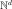
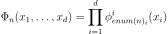
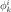
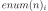
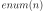
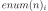
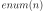
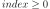

TensorizedUniVariateFunctionFactory¶
- class TensorizedUniVariateFunctionFactory(*args)¶
Base class for tensorized multivariate functions.
- Available constructors:
TensorizedUniVariateFunctionFactory(functions)
TensorizedUniVariateFunctionFactory(functions, enumerateFunction)
- Parameters
- functionslist of
UniVariateFunctionFamily List of univariate function factories.
- enumerateFunction
EnumerateFunction Associates to an integer its multi-index image in the  dimension, which is the dimension of the basis. This multi-index represents the collection of degrees of the univariate polynomials.
- functionslist of
Notes
TensorizedUniVariateFunctionFactory allows one to create multidimensional functions as the tensor product of univariate functions created by their respective factories (i.e.
UniVariateFunctionFamily):
where  is the univariate basis of degree
 associated to the component
associated to the component  and  is the ith component of the multi-index 
and  is the ith component of the multi-index Let’s note that the exact hessian and gradient have been implemented for the product of polynomials.
Examples
>>> import openturns as ot >>> funcColl = [ot.HaarWaveletFactory(), ot.FourierSeriesFactory(), ot.MonomialFunctionFactory()] >>> dim = len(funcColl) >>> enumerateFunction = ot.LinearEnumerateFunction(dim) >>> productBasis = ot.TensorizedUniVariateFunctionFactory(funcColl, enumerateFunction)
Methods
build(index)Build the element of the given index.
Accessor to the object's name.
Get the dimension of the Basis.
getId()Accessor to the object's id.
getName()Accessor to the object's name.
Accessor to the object's shadowed id.
getSize()Get the size of the Basis.
getSubBasis(indices)Get a sub-basis of the Basis.
Accessor to the object's visibility state.
hasName()Test if the object is named.
Test if the object has a distinguishable name.
isFinite()Tell whether the basis is finite.
Tell whether the basis is orthogonal.
setName(name)Accessor to the object's name.
setShadowedId(id)Accessor to the object's shadowed id.
setVisibility(visible)Accessor to the object's visibility state.
add
getEnumerateFunction
getFunctionFamilyCollection
setEnumerateFunction
setFunctionFamilyCollection
- __init__(*args)¶
- build(index)¶
Build the element of the given index.
- Parameters
- indexint, 
Index of an element of the Basis.
- Returns
- function
Function The function at the index index of the Basis.
- function
Examples
>>> import openturns as ot >>> dimension = 3 >>> input = ['x0', 'x1', 'x2'] >>> functions = [] >>> for i in range(dimension): ... functions.append(ot.SymbolicFunction(input, [input[i]])) >>> basis = ot.Basis(functions) >>> print(basis.build(0).getEvaluation()) [x0,x1,x2]->[x0]
- getClassName()¶
Accessor to the object’s name.
- Returns
- class_namestr
The object class name (object.__class__.__name__).
- getDimension()¶
Get the dimension of the Basis.
- Returns
- dimensionint
Dimension of the Basis.
- getId()¶
Accessor to the object’s id.
- Returns
- idint
Internal unique identifier.
- getName()¶
Accessor to the object’s name.
- Returns
- namestr
The name of the object.
- getShadowedId()¶
Accessor to the object’s shadowed id.
- Returns
- idint
Internal unique identifier.
- getSize()¶
Get the size of the Basis.
- Returns
- sizeint
Size of the Basis.
- getSubBasis(indices)¶
Get a sub-basis of the Basis.
- Parameters
- indiceslist of int
Indices of the terms of the Basis put in the sub-basis.
- Returns
- subBasislist of
Function Functions defining a sub-basis.
- subBasislist of
Examples
>>> import openturns as ot >>> dimension = 3 >>> input = ['x0', 'x1', 'x2'] >>> functions = [] >>> for i in range(dimension): ... functions.append(ot.SymbolicFunction(input, [input[i]])) >>> basis = ot.Basis(functions) >>> subbasis = basis.getSubBasis([1]) >>> print(subbasis[0].getEvaluation()) [x0,x1,x2]->[x1]
- getVisibility()¶
Accessor to the object’s visibility state.
- Returns
- visiblebool
Visibility flag.
- hasName()¶
Test if the object is named.
- Returns
- hasNamebool
True if the name is not empty.
- hasVisibleName()¶
Test if the object has a distinguishable name.
- Returns
- hasVisibleNamebool
True if the name is not empty and not the default one.
- isFinite()¶
Tell whether the basis is finite.
- Returns
- isFinitebool
True if the basis is finite.
- isOrthogonal()¶
Tell whether the basis is orthogonal.
- Returns
- isOrthogonalbool
True if the basis is orthogonal.
- setName(name)¶
Accessor to the object’s name.
- Parameters
- namestr
The name of the object.
- setShadowedId(id)¶
Accessor to the object’s shadowed id.
- Parameters
- idint
Internal unique identifier.
- setVisibility(visible)¶
Accessor to the object’s visibility state.
- Parameters
- visiblebool
Visibility flag.